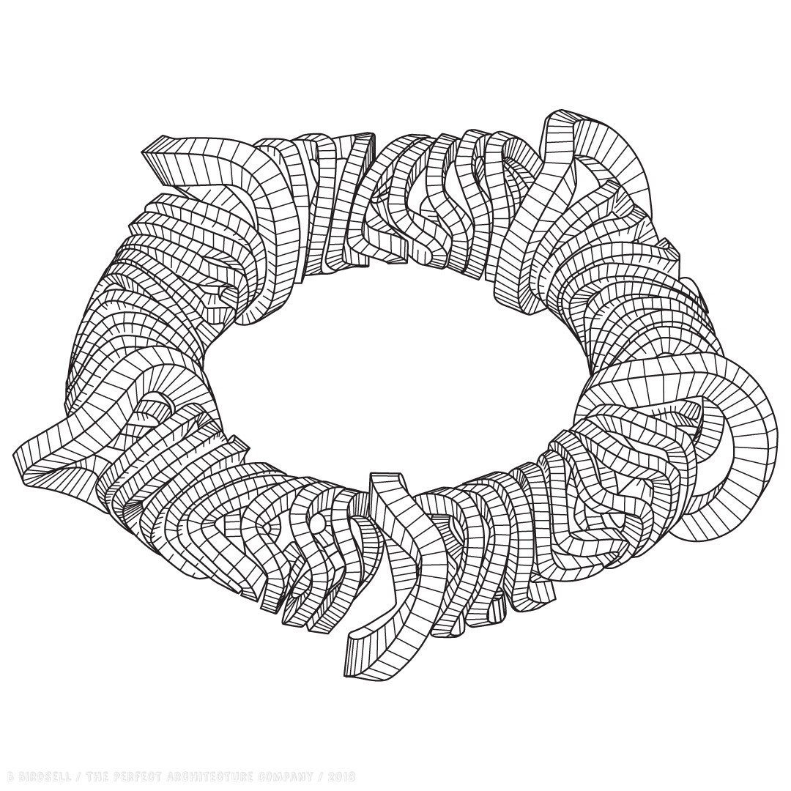

Reading Response 1:
“Critical Atlas of Internet”
Spatial analysis as a tool for socio-political purposes
-Understanding the Internet with 15 hypotheses-

- Boris Beaude- space of “synchorisation” on a world wide scale—is internet space or point?
- Geometry between terrestrial space and Internet space (two cones meeting on tip)
- Unicity and Diversity of the Internet (different authorization and access in different countries)-Plato’s “Allegory of the Cavern”— Internet=single entity with different territorial projections
- Webb activity hosted by only a few leading players like Google
- Weight of Internet is concentrated solely at one focal point: its center of gravity which is located in America
- Physically exists in data centers and cables
- Internet space is like a composition of a painting in a frame—infinite number of formats
- Magnetic-like attraction and flow makes a slope allowing for digital wandering and serendipity(slope is much steeper today towards same services)
- Exists via terrestrial space—systematically connects users to their own localities, triggering off real-time geolocation of each user—being traceable
- Metadata leaves traces of our digital personalities—like a shadow—metadata infiltrate the Internet surface where we become products not clients
- Internet isn’t a blank space but populated by “agents” which still have to be discovered(around 70-75% of the Deep Web)—crawler Web
- Divided by invisible borders
- End-to-end principle (intelligence is pushed out to the end-hosts on network borders—non-discrimination
- Assembly of distinct parts—“interoperability”: assembly of autonomous networks speaking the same language, work together—collage of heterogeneous networks
- Users have personalized access to content—pre-empt user’s needs/adapt to matching profiles
-My Personal thought-
Another possibble thesis of the internet could be that it is shaped in a complicated intertwining ring shape. The reasonings behind this would be basically because the internet interaction experience is usually two directional: forward and backward.
At some point of time after the initial launch it is hard to identify starting points and end points. All of the users use it at different times for different amount. And users sometimes interact in same web pages while others don't.